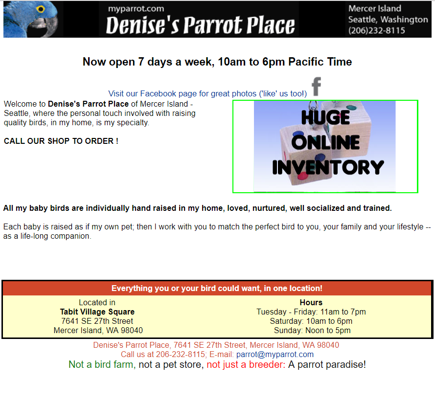
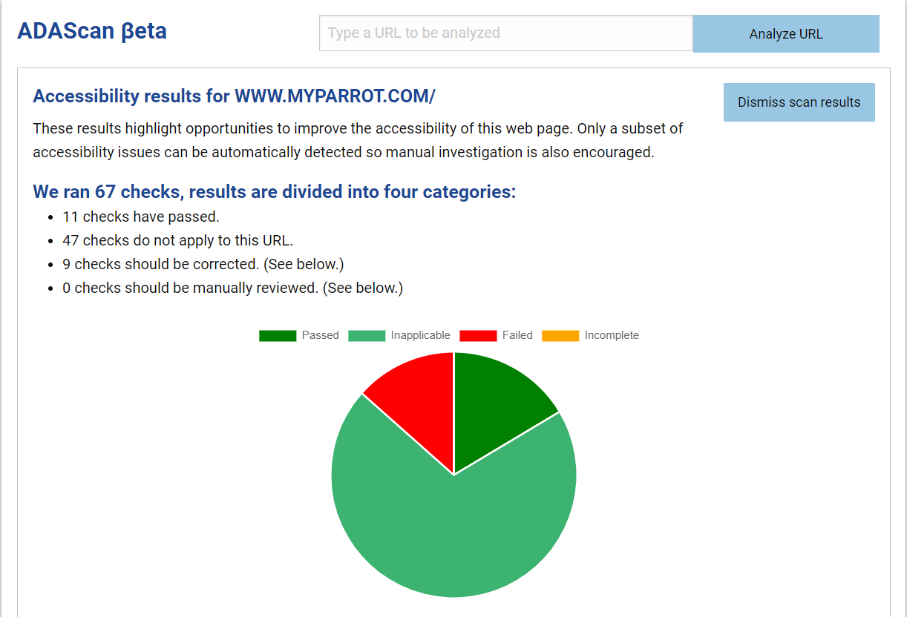

In our growing world, technology is the prevalent form of communication. Websites have valuable information that should be accessible to all communities. But is it? As a business owner, blogger, or anyone who wants to get important information to large audiences has to consider web accessibility a priority.
Building websites for all users is such a critical undertaking the World Wide Web Consortium and the federal government have mandates and best practices to keep accessibility a priority for website owners. “Section 508” is a federal mandates government funded websites adhere to accessibility best practices.
The World Wide Web Consortium is the leading organization of Web accessibility initiatives. “WAI develops its work through W3C’s consensus-based process, involving different stakeholders in Web accessibility. These include industry, disability organizations, government, accessibility research organizations, and more.”
The W3C discuses web accessibility in 5 key criteria areas. The criterion for website accessibility includes percievability, adaptability, operable, understandable and robust. Each of the main category has additional criterion for evaluation. This article identifies a website utilizes ADA scanning tools to evaluate website accessibility. The completion of this article included the process of identifying a website for evaluation, the review of the W3C website to review standards for accessibility, criterion that web page owners have to consider when publishing information on the web. Before discussing the website to be evaluated I will briefly discuss the significance of website accessibility.
The merit of the topic of website accessibility, significance and importance are identified by the federal government’s commitment to protecting disabled communities. The federal government protects individuals with disability perceived or otherwise with Section 508 of the Rehabilitation Act of 1973. “In 1998, Congress amended the Rehabilitation Act of 1973 to require Federal agencies to make their electronic and information technology (EIT) accessible to people with disabilities. The law (29 U.S.C § 794 (d)) applies to all Federal agencies when they develop, procure, maintain, or use electronic and information technology. Under Section 508, agencies must give disabled employees and members of the public access to information comparable to the access available to others.
Myparrot.com is the website being evaluated for web accessibility. The purpose of the webpage is to direct potential customers to a parrot store on Mercer Island, Washington. The tools used to evaluate the accessibility of the website included ADA scan to scan the website for accessibility.
ADA Scan runs a diagnostic on the web page in 68 areas provides the data in four categories passed in inapplicable or incomplete. After running ADA Scan on myparrot.com the scores indicates the website adaptability and percievability need significant improvement.
The guidelines for evaluation for myparrot.com are distinguishability and percievability, which are being evaluated by the websites use of images, effective use of color, adaptability based on website delivery structure, an organization of html code to produce correct structure and layout. Before discussing ways to fix the website review of website distinguishability, percievaility adaptability is a must.
Website percievability simply means content has to be offered in numerous ways which can be accomplished with the use of images, audio, varied formats, and compatibility with technologies that assist your webpage users.
Websites with high levels of distinguishability have visual and audio web content easily understood by the user through effective use of colors, photos, text sized, and image.
Increasing website adaptability is all about simplicity of a webpages delivery structure while maintaining easily consumable information in a user friendly structure. Organizing html code, to produce correct page layout, structure, information fields or icons so user from all backgrounds can easily navigate a webpage. Incorporating the structural aspects of a webpage increases page adaptability.
Now that the criteria for website evaluation has been reviewed, I will include my recommendations. Recommendations for website fixing the website include improve distinguishability by improving the font color using all black versus red, purple or green. Improving adaptability by improving the page layout structure and adding structural components. The current page has headlines, icons, images, and store information hours that aren’t displayed with strong structural layout. The header needs to be more prominent, the prominence helps distinguish the header form the general website content. Improvements in html index for the webpage display for headers is an improvement indicated in the scan results as well.
Easily consumable web page content is an indicator of strong adaptability. The current webpage doesn’t have a strong header, sections, and information about the website to easily identify the purpose of the page resulting in weakened adaptability scores. Recommendations for fixing the webpage adaptability include adding the structural components of a webpage layout including effective headers, sections, subsections, organized titles, photos to help the user understand the website to understand the purpose of the webpage, easily identify store hours, and find information about the webpage with social media links. I recommend moving the current social media links to a different location on the page as to not to confuse the accessibility tools for blind users.